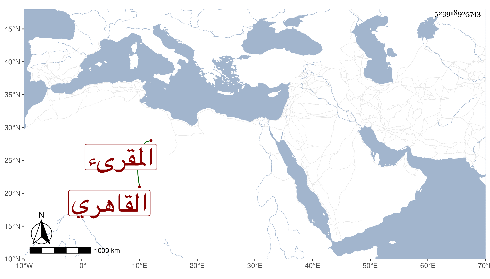

0902Sakhawi.DawLamic.ITO20230111-ara1.EIS1600.523918925743
Biography ID: 523918925743
854
رضوان بن علي بن رضوان القاهري المقرىء والد أحمد الماضي وأحد قراء الجوق المجتهدين في التحصيل . تكسب بالشهادة كأبيه وبالدوران في الاسباع ببيت الأمراء ونحوهم وتنزل في كثير من الجهات بل كتب الوصولات بالخشابية بعد ولده وربما خطب وكنت أحمد قراءته ووجد له بعض الاسمعة في ثبت الجمال البدراني فاستجازه الطلبة لذلك .
